Ресницы
- Уголки, экспресс2 000 ₽
- Классика2 100 ₽
- 1,5D2 200 ₽
- 2D2 400 ₽
- 2,5D2 600 ₽
- 3D2 800 ₽
- Цветные ресницы+100 ₽
- Снятие чужой работы300 ₽
- Ламинирование ресниц1 600 ₽
Посчитать наращивание или коррекцию
2 400 ₽
Перманентный макияж бровей и губ, наращивание и ламинирование ресниц, оформление бровей. Студия одного мастера на Вокзальной магистрали, по предварительной записи.
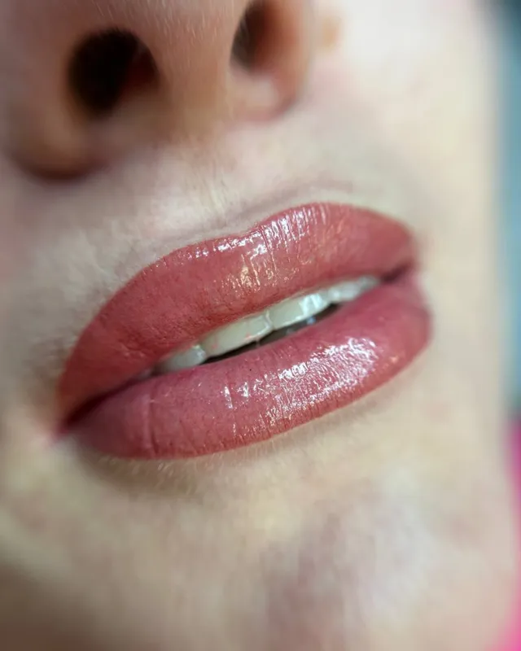
Дневник заживления
Выберите брови или губы и передвиньте ползунок: рисунок покажет, как обычно меняется цвет, а справа будет, что в эти дни нормально, что можно и чего лучше не делать.
Можно
Лучше не
Это общая памятка. Точные рекомендации по уходу и сроки коррекции Алёна даст после процедуры, с учётом вашей кожи.
Записаться на перманентРаботы
Фото работ из карточки студии в 2ГИС: перманент губ и бровей, наращивание ресниц.
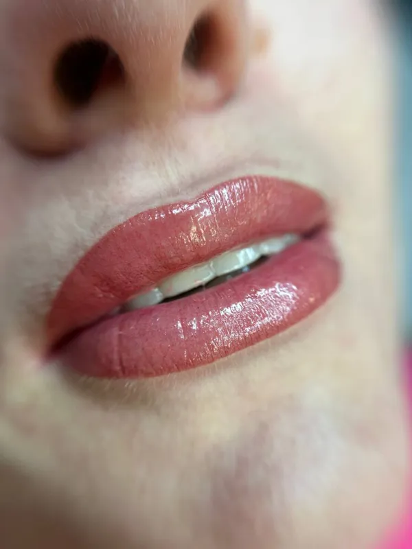
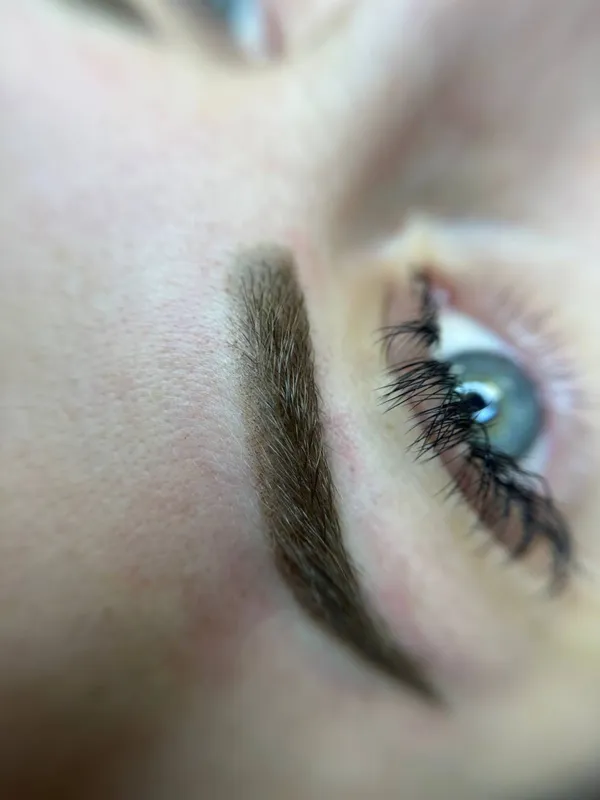
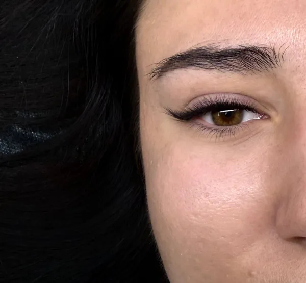
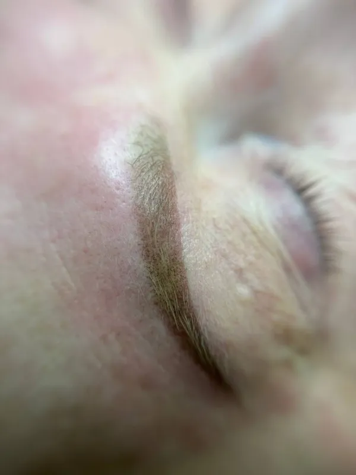
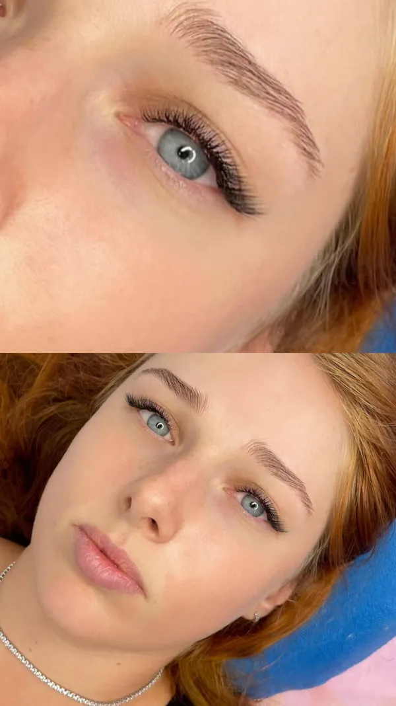
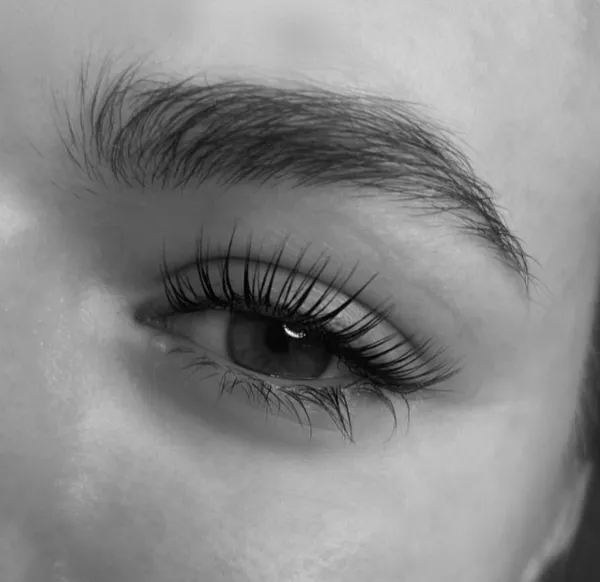
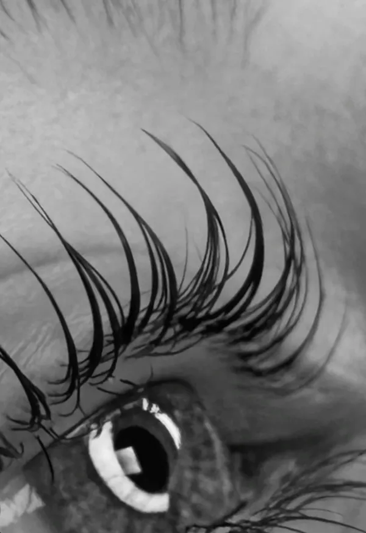
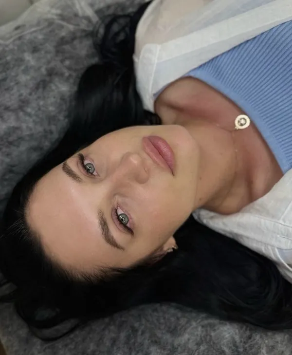
Больше работ в Telegram-канале студии.
Цены
Цены на ресницы и брови с прайс-листов в 2ГИС. Цены на перманент на готовом сайте впишем по вашему прайсу.
Посчитать наращивание или коррекцию
Ламинирование ресниц тоже 1 600 ₽.
Брови и губы. Цен на перманент в 2ГИС нет, поэтому здесь заглушки.
Узнать цену в WhatsAppЗапись
Выберите услугу, день и время, оставьте имя и телефон. Накануне можно получить напоминание в Telegram.
Так заявка придёт Алёне
Новая запись: Мария, наращивание ресниц 2D, четверг 12:00. Телефон клиентки и кнопки, чтобы сразу ответить:
Здесь пример. На готовом сайте придёт настоящая заявка с номером клиентки.
Занятость в календаре придумана для примера.
День
Время
Откроется бот студии: нажмите «Старт», и накануне придёт напоминание. Алёна увидит ваш ник и сможет написать в Telegram. Здесь это демонстрация.
Напоминания включены. Накануне визита придёт сообщение в Telegram.
Отзывы
«Хорошая студия одного замечательного мастера Алёны. Пришла по рекомендации в 2022 году и уже больше 4 лет за красотой только сюда. За это время Алёна добавила перманент. Я сделала брови и губы: естественно, натурально!»
«Делаю ресницы и брови у мастера Алёны уже более 5 лет. Всегда всё аккуратно и чисто. Маме посоветовала сделать перманентный макияж губ, она осталась довольна.»
«Всё на высшем уровне: стерильность, внимательность, индивидуальный подход. Мастер всегда подскажет, покажет фото примерного результата. Реснички держатся всегда долго.»
«Уютно, чисто, играет спокойная музыка. Мастер всё объяснила, показала материалы, рассказала, как ухаживать за ресницами после процедуры. Нет склеек, каждая ресничка на своём месте.»
«Сделала всё быстро, аккуратно и именно с тем эффектом, который я просила. Ресницы выглядят естественно и носятся уже больше трёх недель без проблем.»
«Решила год назад сменить мастера по наращиванию ресниц и ни разу не пожалела. Реснички шикарные, ношу 6–7 недель, держатся крепко.»
Отзывы из карточки студии в 2ГИС, с сокращениями.
Студия и как найти
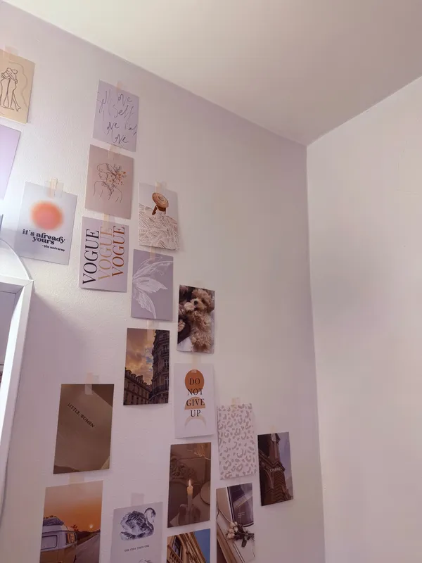
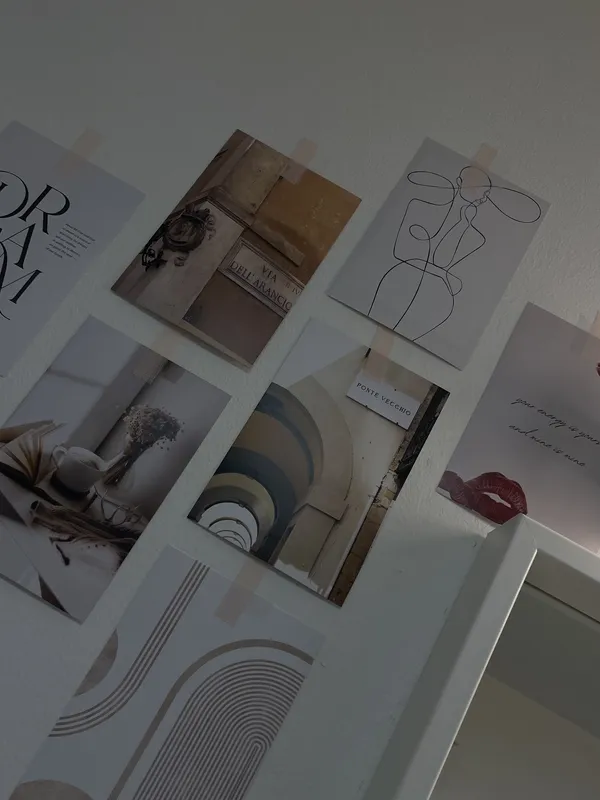
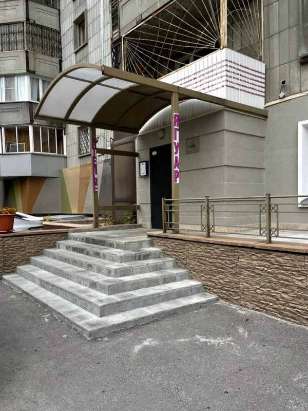
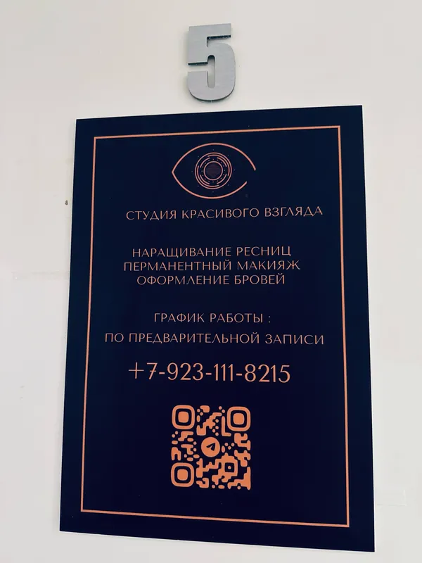
Новосибирск, Вокзальная магистраль, 4/1, офис 5
Вопросы
Новосибирск, Вокзальная магистраль, 4/1, офис 5 (Железнодорожный район). В 2ГИС рядом указано ателье «Авангард-ягуар». До метро «Площадь Гарина-Михайловского» около 420 метров.
Наращивание и ламинирование ресниц, оформление бровей (окрашивание, коррекция пинцетом или воском, ламинирование) и перманентный макияж бровей и губ.
Уголки (экспресс) 2 000 ₽, классика 2 100 ₽, 1,5D 2 200 ₽, 2D 2 400 ₽, 2,5D 2 600 ₽, 3D 2 800 ₽. Цветные ресницы +100 ₽, снятие чужой работы 300 ₽.
Если прийти не позднее чем через 2 недели, коррекция стоит 70 % от цены наращивания. Например, коррекция 2D 1 680 ₽.
Цены на перманент бровей и губ уточняйте у Алёны в WhatsApp или Telegram: на готовом сайте здесь будет прайс.
Обычно первые дни цвет ярче, потом появляются корочки или шелушение, затем цвет на время бледнеет и к концу месяца проявляется. Коррекцию делают после заживления. Точную памятку даст Алёна после процедуры.
Студия работает ежедневно с 9:00 до 21:00 по предварительной записи. Напишите Алёне в WhatsApp или Telegram или позвоните: +7 923 111-82-15.